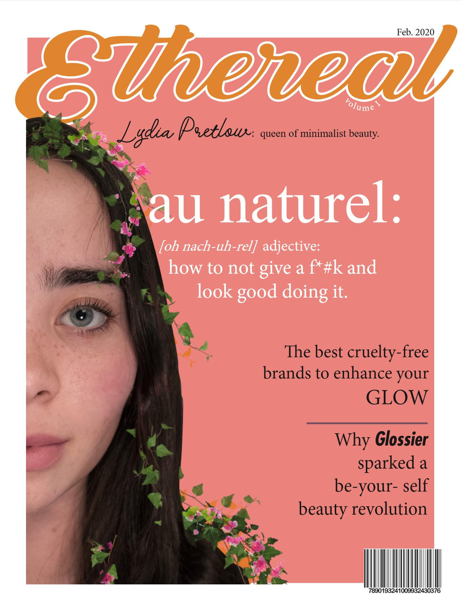

Provides various front-end related services ranging from development work, speaking engagements, instructor training, workshops, and curriculum development.
Cai Cramer
Journalism + International Relations Student
I have a passion for writing and an artistic eye. Through my journalistic training, I've delevoped my talents as a media designer. I aspire to combine my love for design with my passion for social justice.
Featured Projects
Check out the magazine cover and spread that I created.
Etherial Magazine Cover
I photographed, edited, and created this cover with Adobe InDesign and Adobe Illustrator.
Etherial Magazine spread
Work Experience
Front-end Developer & Educator
Director of Curriculum
Managed all curriculum for the adult programs. Created teaching materials and implemented instructor training across 20+ Canadian chapters.
Lead Front-End Developer
Lead the front-end development for the in-house safety inspection software.
Education
Seneca College - Toronto, ON
Webmaster Content Site Design Certificate, 2006
14 week full-time program covering HTML, CSS, Flash, Photoshop, PHP and JavaScript.
York University - Toronto, ON
Bachelor of Arts with Honours, 2001-2005
Double Major in Communications & Psychology.
San Jose State University - San Jose, CA
General Studies, 2000